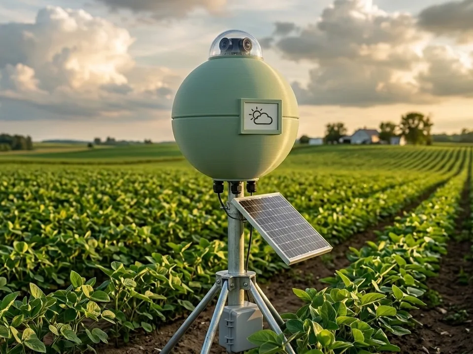
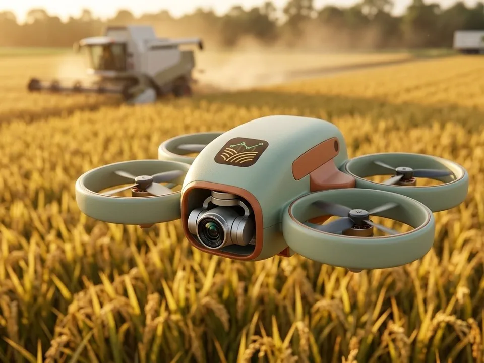
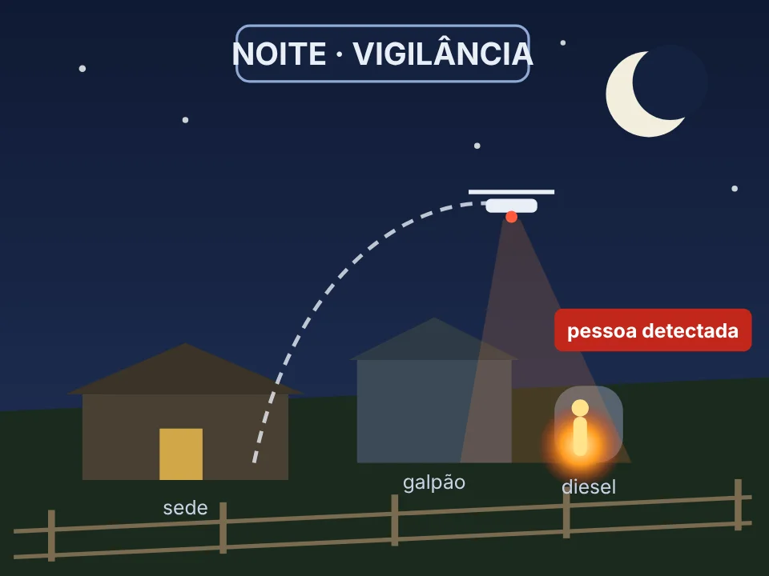
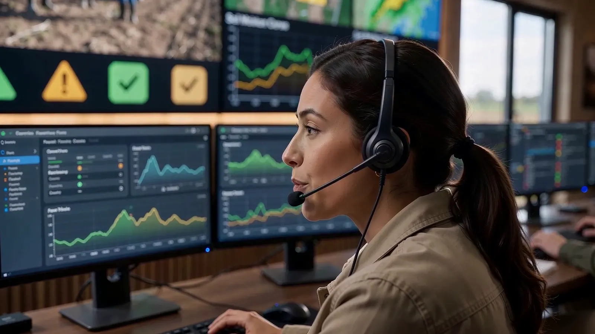

Help Farm / Tecnologia
O motor RAPP: cada ativo comparado com ele mesmo.
Criado para turbinas, bombas e compressores de plataforma de petróleo, o RAPP aprende o funcionamento normal de um equipamento e detecta o desvio que leva à falha. Na fazenda, o “equipamento” é o talhão, o animal e a máquina.
Entradas, basal, desvio, ação.
| Frente | O que entra | Desvio que antecede o problema | Ação disparada |
|---|---|---|---|
| Solo | Umidade por profundidade, condutividade, temperatura, chuva | Secagem mais rápida que o normal; camada funda sem recarga; condutividade subindo | Ajuste de irrigação, subsolagem, compra de corretivo |
| Lavoura | Vigor por satélite e drone, molhamento foliar, armadilhas de pragas | Vigor abaixo da curva esperada e dos vizinhos; praga acima do nível de controle | Vistoria guiada por GPS, reserva de defensivo, pulverizador agendado |
| Clima | Estação local, previsão numérica, zoneamento de risco | Queda rápida de temperatura com céu limpo (geada); déficit de água acima do histórico | Proteção contra geada, replanejamento, aviso ao seguro |
| Gado | Peso, temperatura, ruminação, água, índice de calor | Ruminação caindo; febre acima da média do animal; menos tempo no cocho | Separar o animal, reservar medicamento, chamar o veterinário |
| Máquinas | Vibração, corrente do motor, pressão hidráulica, códigos CAN | Vibração crescendo na frequência de defeito; corrente do pivô subindo com a mesma velocidade | Ordem de serviço e peça comprada antes da safra |
O que é a assinatura de condição
42 s
- Cada talhão, animal e máquina tem um jeito normal de funcionar
- O RAPP desenha essa faixa normal a partir das medições
- Um desvio pequeno, que o olho não vê, sai da faixa
- O alerta chega antes do sintoma, com a ação sugerida
Equipamentos que só a Help Farm tem, ligados ao RAPP.
Além dos sensores de mercado, a Help Farm leva para a fazenda dois dispositivos próprios. Sozinhos eles observam; ligados ao RAPP, eles decidem e avisam.

Analisador de Nuvens
Vê a nuvem chegando, confirma com o satélite e avisa chuva, granizo e tempestade em até 10 minutos: dá tempo de parar a pulverização e recolher as máquinas.

Drone de dois turnos · dia
De dia, o Avaliador de Trabalho em Campo sobrevoa a colheita e o plantio seis vezes por hora: área feita, ritmo, paradas e hora prevista de término, sem piloto.

Drone de dois turnos · noite
À noite, o mesmo drone faz a ronda de segurança com câmera térmica. Se a porteira abre ou a cerca dispara, ele decola sozinho e manda a foto ao celular do produtor.
Imagens ilustrativas. Voos noturnos e automáticos seguem as autorizações da aviação civil de cada país.


Técnicos recebem os sinais da terra, dia e noite.
No backoffice, especialistas acompanham os alertas do RAPP e falam com a dupla da unidade móvel e com o produtor. Quem decide é sempre uma pessoa: o RAPP recomenda, a central confirma e aciona quem precisa agir.
O alerta sai mesmo sem internet.
Sensores
Sondas, estações, bolus e sensores de vibração enviam dados por rádio de longo alcance (LoRaWAN), sem mensalidade de operadora.
Gateway na fazenda
Um computador de borda roda o RAPP no próprio local e dispara o alerta na hora.
Satélite e nuvem
Antena satelital ou 4G sobe os dados para a nuvem, onde o modelo aprende com todas as fazendas.
Quem age
Produtor, técnico da cooperativa, veterinário, fornecedor e seguradora recebem o que lhes cabe.
Os dados pertencem ao produtor. A Help Farm usa dados agregados e anônimos para melhorar o modelo, com isso escrito em contrato.